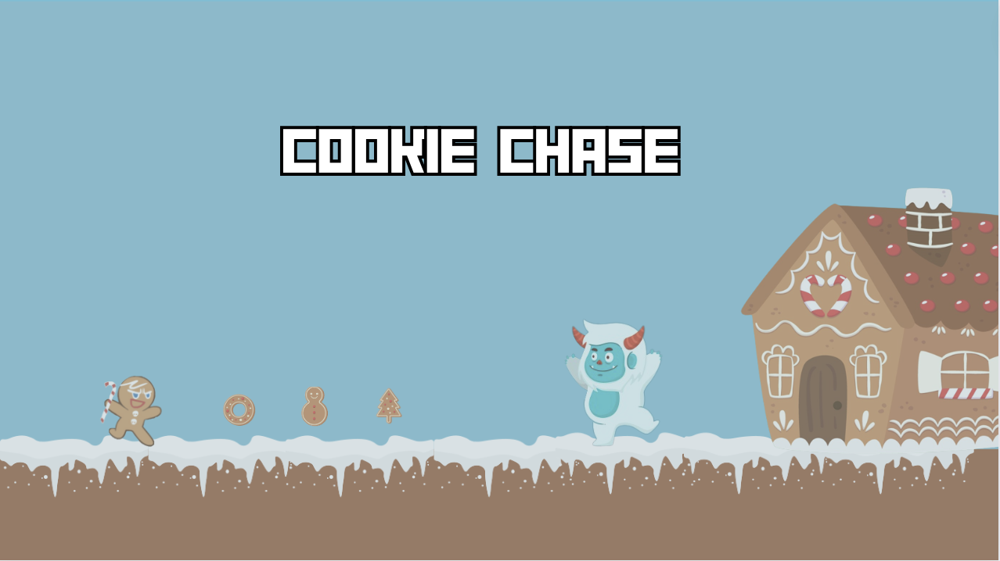

bem vindo ao

História do Jogo
contar sobre o jogo……
Aprenda a jogar
explica como o jogo funciona
Veja como o jogo funciona
Bora Jogar
Como posso jogar?
ensinar a como baixar e jogar no pygame
Zip code do jogo: